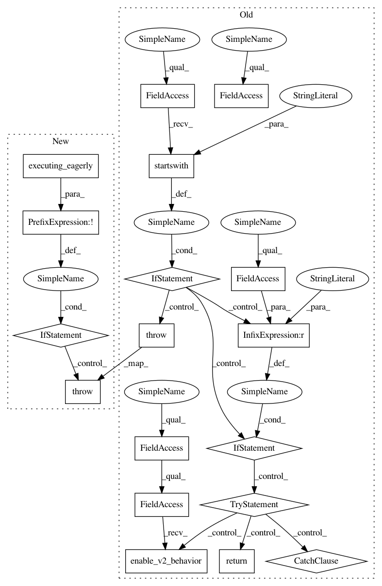

86ba09af5eea6fb605c39da57297b6d5d3b2c77d,tensorflow_hub/tools/make_nearest_neighbour_index/embedding_generator_test.py,,_ensure_tf2,#,93
Before Change
ImportError: If tensorflow is too old for proper TF2 behavior.
print("Running with tensorflow %s (git version %s)", tf.__version__,
tf.__git_version__)
if tf.__version__.startswith("1."):
if tf.__git_version__ == "unknown": // For internal testing use.
try:
tf.compat.v1.enable_v2_behavior()
return
except AttributeError:
pass // Fail below for missing enabler function.
raise ImportError("Sorry, this program needs TensorFlow 2.")
if __name__ == "__main__":
try:
_ensure_tf2()
except ImportError as e:
After Change
ImportError: If tensorflow is too old for proper TF2 behavior.
print("Running with tensorflow %s", tf.__version__)
if not tf.executing_eagerly():
raise ImportError("Sorry, this program needs TensorFlow 2.")
if __name__ == "__main__":
try:
_ensure_tf2()
except ImportError as e:
In pattern: SUPERPATTERN
Frequency: 3
Non-data size: 18
Instances
Project Name: tensorflow/hub
Commit Name: 86ba09af5eea6fb605c39da57297b6d5d3b2c77d
Time: 2020-04-21
Author: no-reply@google.com
File Name: tensorflow_hub/tools/make_nearest_neighbour_index/embedding_generator_test.py
Class Name:
Method Name: _ensure_tf2
Project Name: tensorflow/hub
Commit Name: 86ba09af5eea6fb605c39da57297b6d5d3b2c77d
Time: 2020-04-21
Author: no-reply@google.com
File Name: tensorflow_hub/tools/make_nearest_neighbour_index/index_builder_test.py
Class Name:
Method Name: _ensure_tf2
Project Name: tensorflow/hub
Commit Name: 86ba09af5eea6fb605c39da57297b6d5d3b2c77d
Time: 2020-04-21
Author: no-reply@google.com
File Name: tensorflow_hub/tools/make_image_classifier/make_image_classifier.py
Class Name:
Method Name: _ensure_tf2
Project Name: tensorflow/hub
Commit Name: 86ba09af5eea6fb605c39da57297b6d5d3b2c77d
Time: 2020-04-21
Author: no-reply@google.com
File Name: tensorflow_hub/tools/make_nearest_neighbour_index/embedding_generator_test.py
Class Name:
Method Name: _ensure_tf2